Det dybe spor
Kan du i forvejen lidt kode, eller vil du gerne kunne det, så er det her dine ekstra øvelser. Fire spor, der går et spadestik dybere end modulerne.

Sådan bruger du siden
Sporene her er valgfri fordybelse til dig, der er hurtigt igennem modulernes øvelser, eller som vil arbejde videre hjemme. Spor A og B forlænger modul 2, spor C forlænger modul 4, og spor D giver dig din egen AI-server på skrivebordet. Alle spor kan tages hver for sig.
Spor A: Terminalen og git
I modul 2 brugte du git gennem GitHubs hjemmeside. Professionelle bruger git fra terminalen, og det er mindre skummelt, end det ser ud. Du kan endda hente hele denne kursusside ned og se dens fulde historik.
- Installér git fra git-scm.com. På Mac kan du i stedet skrive
xcode-select --installi Terminal. - Åbn terminalen (Terminal på Mac, Git Bash på Windows), og hent kursets repo med kommandoerne herunder.
- Kig på historikken med
git log. Det, du ser, er hele denne kursussides tilblivelse, commit for commit. - Åbn en fil i en teksteditor, lav en lille ændring, og se hvad git siger med
git statusoggit diff.
clone henter et repo med hele dets historik. log viser historikken.
status og diff viser, hvad der er ændret siden sidste commit.
Det er de fire kommandoer, man bruger halvfems procent af tiden.
Spor B: Claude Code i terminalen
I modul 2 arbejdede Claude Code for dig via browseren. I terminalen kommer du tættere på: du kan se hvert værktøjskald, agenten laver, og arbejde i et lokalt repo på din egen maskine. Kræver et Claude-abonnement og Node.js fra nodejs.org.
- Installér Claude Code med kommandoen herunder, og log ind første gang du starter den.
- Stil dig i repo-mappen fra spor A, og start agenten med
claude. - Giv den en lille opgave på dansk, f.eks. »ret en stavefejl« eller »forklar hvad site.js gør«. Se hvordan den læser filer og foreslår ændringer, som du skal godkende.
- Opret en fil med navnet
CLAUDE.mdi mappen, og skriv tre linjer om projektets regler, f.eks. at al tekst skal være på dansk. Agenten læser den automatisk, og du har nu skrevet din første instruks til en AI-medarbejder.
CLAUDE.md er projektets faste
instruks til agenten, en slags medarbejderhåndbog på tre linjer.
Spor C: Webhooks og Apps Script i hånden
I modul 4 klikkede du flows sammen. Under alle flow-værktøjerne ligger det samme byggeelement: en webhook, altså en webadresse, der udløser kode, når nogen kalder den. Her bygger du din egen fra bunden.
- Gå til script.new, og indsæt scriptet herunder med din egen mail.
- Vælg Udrul, derefter Ny udrulning og typen Webapp. Sæt adgang til »Alle«, og kopiér webadressen.
- Kald din webhook fra terminalen med curl-kommandoen herunder, med din egen webadresse sat ind.
- Tjek din indbakke. Du har lige bygget det, der ligger under hvert eneste flow i modul 4.
Spor D: Kør en sprogmodel på din egen maskine
Alt på kurset er kørt i skyen. Men åbne modeller kan køre lokalt på en almindelig computer, helt uden internetforbindelse. Det er den håndgribelige udgave af ordbogens »open source-model«, og et stærkt argument i enhver diskussion om databeskyttelse.
- Installér LM Studio, og hent en lille åben model gennem appens søgefunktion. Vælg en af de små, den skal bare kunne køre på din maskine.
- Chat med modellen, og sluk så for wifi. Chat videre. Lad pointen synke ind: modellen bor på din disk.
- Start den lokale server i LM Studio (fanen Developer), og tal med din model via kommandoen herunder. Det er samme slags API, som professionelle systemer bruger mod skyen.
- Sammenlign med en cloudmodel: hastighed, kvalitet, dansk. Hvad koster forskellen, og hvad køber den?
Kilder og videre læsning
- Gits officielle dokumentation med bogen Pro Git gratis online
- Claude Code med dokumentation og installationsvejledning
- Apps Script-dokumentationen, herunder webapps og doPost
- LM Studio og Ollama til lokale modeller